1
La puerta cerrada
El consultorio está en casa. Durante el día no hay nadie para abrir. Quien pasa se va, o tiene que volver a la noche.
Para Alejandra
El consultorio cierra durante el día, atendés sola y también trabajás en clínicas. Este cuaderno muestra cómo la gente saca turno igual, desde el celular.
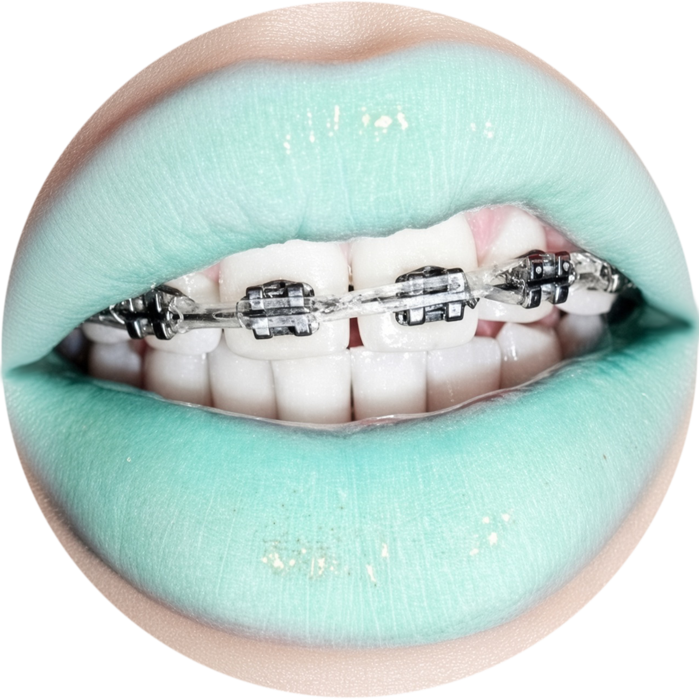
Dent.
Alejandra Reverter
Odontología · Matrícula 61.178
Urquiza 300, San Nicolás de los Arroyos
Primero, el problema y cómo queda resuelto. Después, las pantallas: las de quien saca el turno, y las tuyas.
Consultorio · Urquiza 300
El problema
Hola, Alejandra. El consultorio de Urquiza necesita algo chico: que quien pasa pueda dejar sus datos y elegir una hora en la que vos estás.
El consultorio está en casa. Durante el día no hay nadie para abrir. Quien pasa se va, o tiene que volver a la noche.
Mientras atendés en una clínica, nadie toma el teléfono ni anota en un cuaderno. El turno se pierde en el camino.
Esas horas tienen que quedar ocupadas. Si el cartel las ofrece, alguien saca turno a una hora en la que estás en otro lado.
Lo que hace el sistema. Separa el consultorio de las clínicas. En el QR solo aparecen las horas que vos marcás como disponibles. El resto queda en tu agenda, para que lo veas vos, y el paciente no.
Cómo funciona
Cuatro pasos. La persona los hace sola. A vos te queda el turno anotado.
El QR se abre con la cámara, en la puerta. El link abre la misma pantalla: va en el contestador de WhatsApp, para quien ya tiene tu número agendado.
Nombre, apellido, DNI, obra social y número de afiliado. Si no tiene obra social, elige Particular. Si ya tenía turno, lo busca con el DNI.
Ve los días y las horas que marcaste como disponibles. Las horas de las clínicas no están en esa lista.
En tu agenda quedan el nombre, el DNI, la obra social y la hora. Quien reserva se lleva un código por si tiene que cancelar.
Cada turno dura los minutos que vos pongas en Más. Ahí también elegís hasta cuántos días adelante se ofrece, y con cuánta anticipación. En la foto de más adelante los horarios aparecen cada media hora porque así quedó armado ese ejemplo.
Del lado del paciente · 1
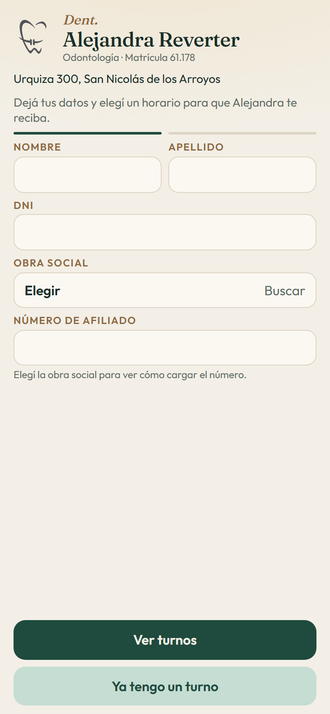
Lo primero que ve
El logo, Dent. Alejandra Reverter, la matrícula 61.178 y Urquiza 300. Abajo, una sola frase: que deje sus datos y elija un horario.
El formulario entra en la pantalla del teléfono, de una vez. La matrícula y la dirección se editan en Más. En el listado del Círculo Odontológico de San Nicolás, de septiembre de 2025, figuran 61.178 y Urquiza 300.
Del lado del paciente · 2
Toca Buscar y aparece el listado: las obras nacionales y las de la provincia de Buenos Aires, más las prepagas de uso común. Si no tiene cobertura, elige Particular.
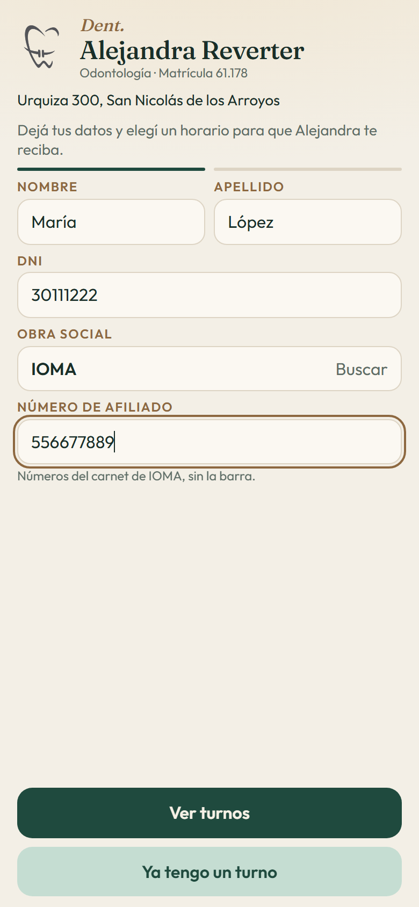
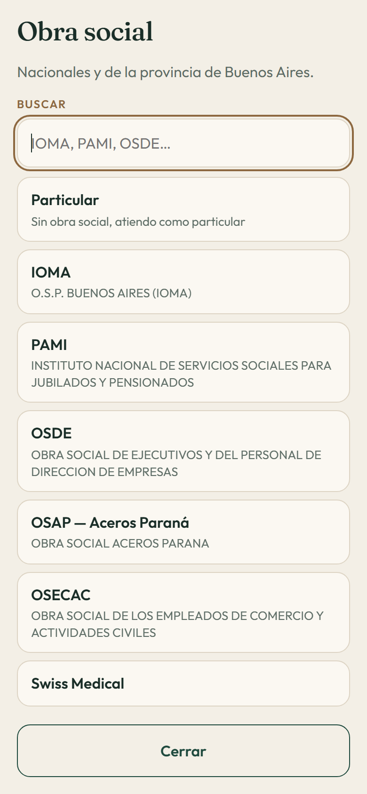
El sistema revisa que el número tenga la forma de esa obra. Las obras no publican el padrón de afiliados: es un dato de salud. La cobertura la confirmás vos, con el carnet.
Del lado del paciente · 3
Solo ve días de consultorio. En el ejemplo, martes y jueves a la noche. La separación entre un horario y el siguiente es la que vos dejes en Más. Esa tarde, por la anticipación, ya no se ofrecían las 18 ni las 19: en la foto quedan las 20:00 y las 20:30.
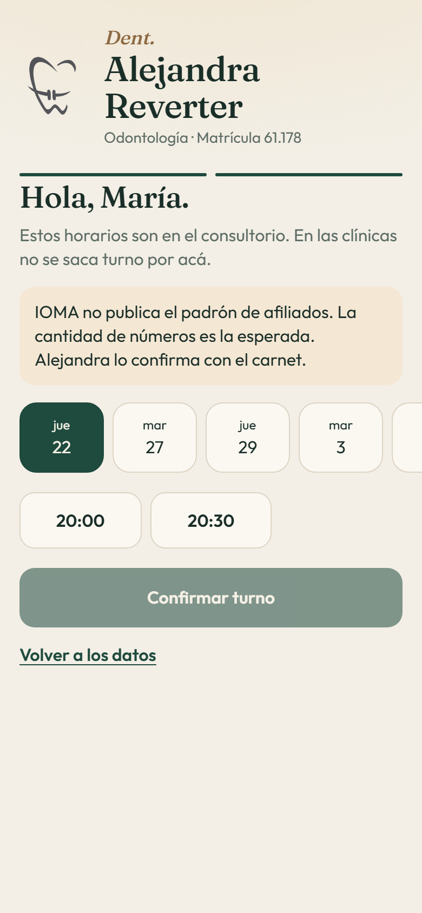
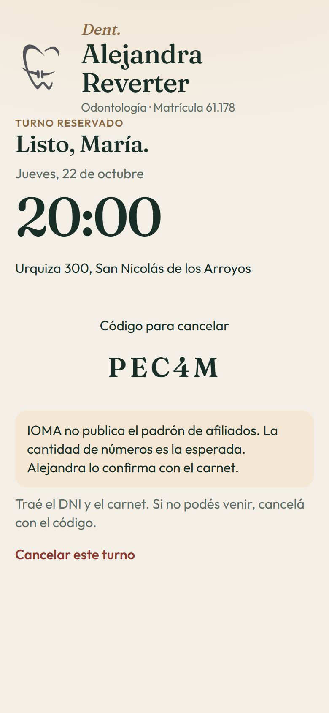
De tu lado · 1
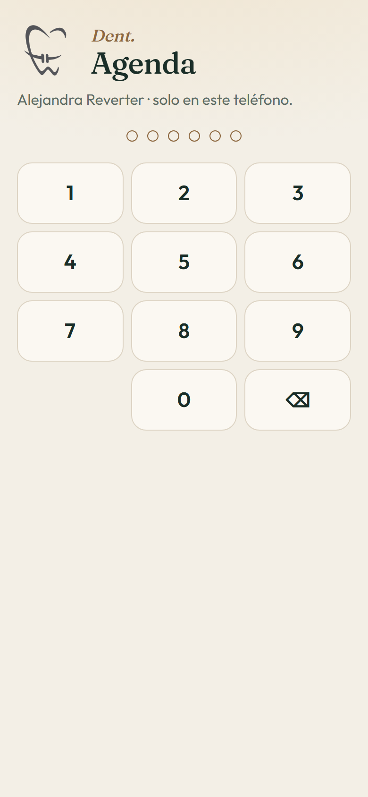
Tu agenda
El link abre lo mismo que el QR. Para la agenda, se le agrega /admin.
https://pipes-smith-frontier-transform.trycloudflare.com/admin
339187
Clave del usuario de demostración. Ese teléfono la recuerda unos 30 días. Desde Más podés poner una clave nueva.
Abajo vas a ver cuatro lugares: Agenda, Horarios, Pacientes y Más. Agenda es el día de hoy. Horarios es lo que el QR ofrece. Pacientes es quien ya se anotó. Más es el cartel, la matrícula y la dirección.
De tu lado · 2
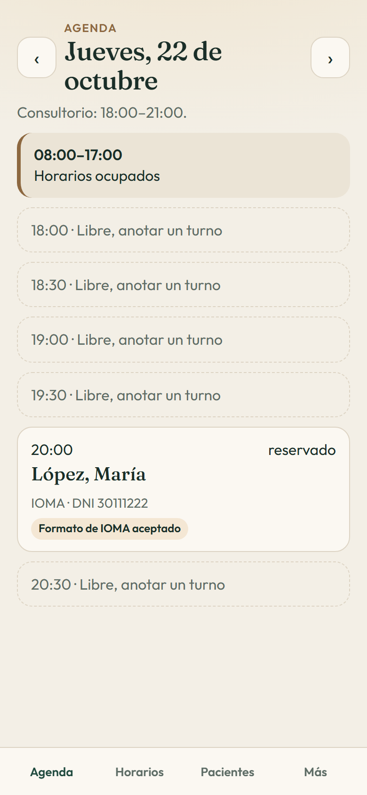
Agenda
Este es el jueves 22 de octubre, en la prueba. Arriba dice el consultorio: 18:00 a 21:00.
Las flechas cambian de día. Tocás el turno y podés marcarlo como cobertura ok, atendido, o cancelarlo. Si lo cancelás, la hora vuelve a quedar libre.
De tu lado · 3
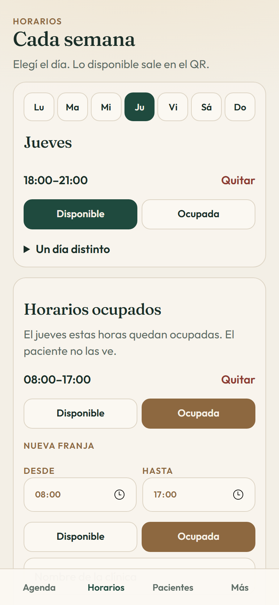
Horarios
Elegís el día de la semana. Lo que quede en Disponible sale en el QR. Lo que quede en Ocupada, no.
«Un día distinto» sirve para una excepción: un feriado, un consultorio cerrado, o un día extra. El resto de las semanas sigue igual.
De tu lado · 4
Misma pantalla, un poco más abajo. La franja ocupada se arma ahí, y debajo está la minigrilla de los próximos siete días.
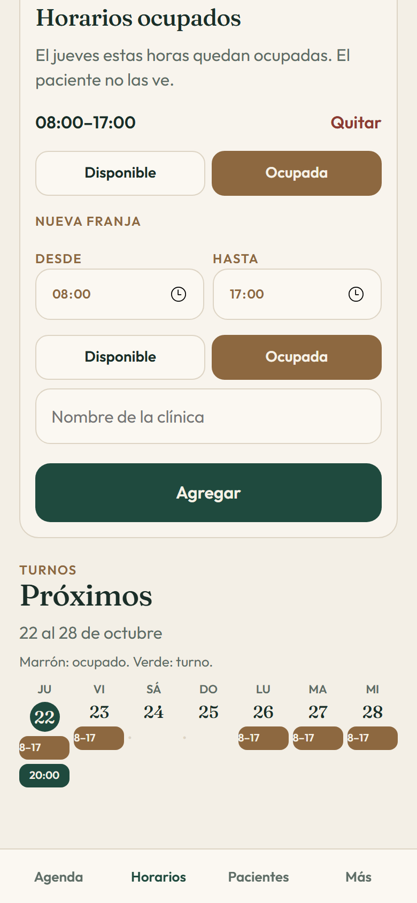
Próximos
Del 22 al 28 de octubre, en el ejemplo. Cada columna es un día.
Tocás el turno verde y vas a ese día en la agenda. Así ves el nombre sin recorrer hora por hora.
De tu lado · 5
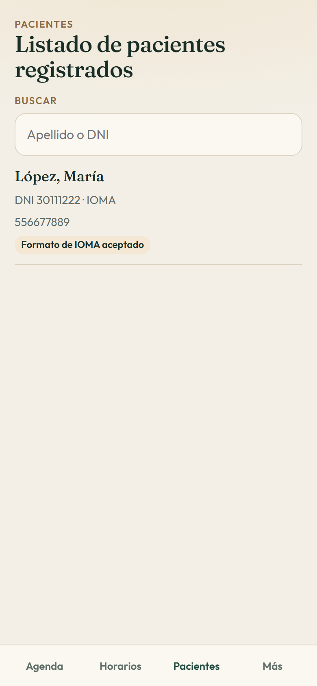
Pacientes
El título es Listado de pacientes registrados. Ahí queda cada persona que sacó un turno, aunque después lo haya cancelado.
Ese cartel habla del formato del número. La cobertura la confirmás con el carnet, cuando la recibís.
De tu lado · 6
Los dos abren la misma pantalla. El QR va en la puerta. El link va en el contestador de WhatsApp, para quien ya tiene tu número agendado.
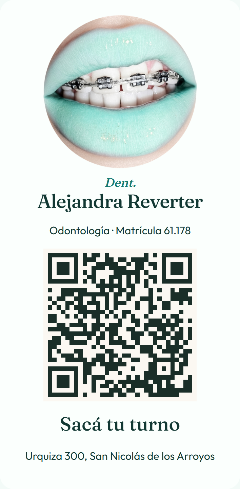